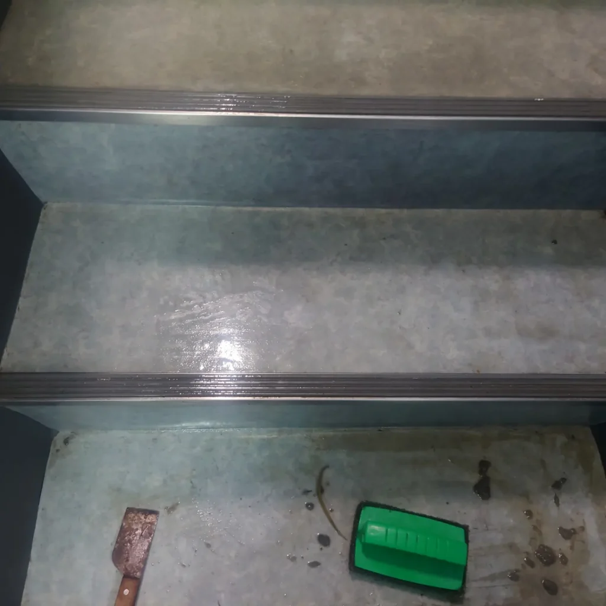
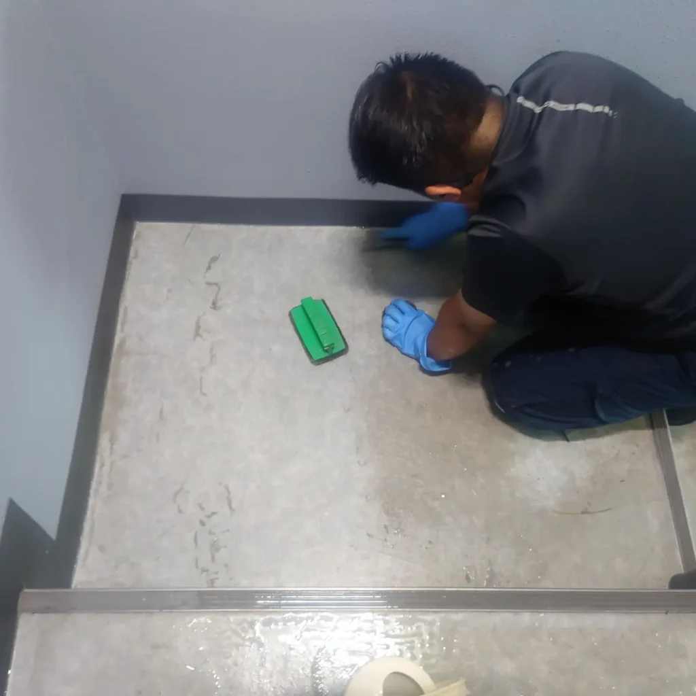
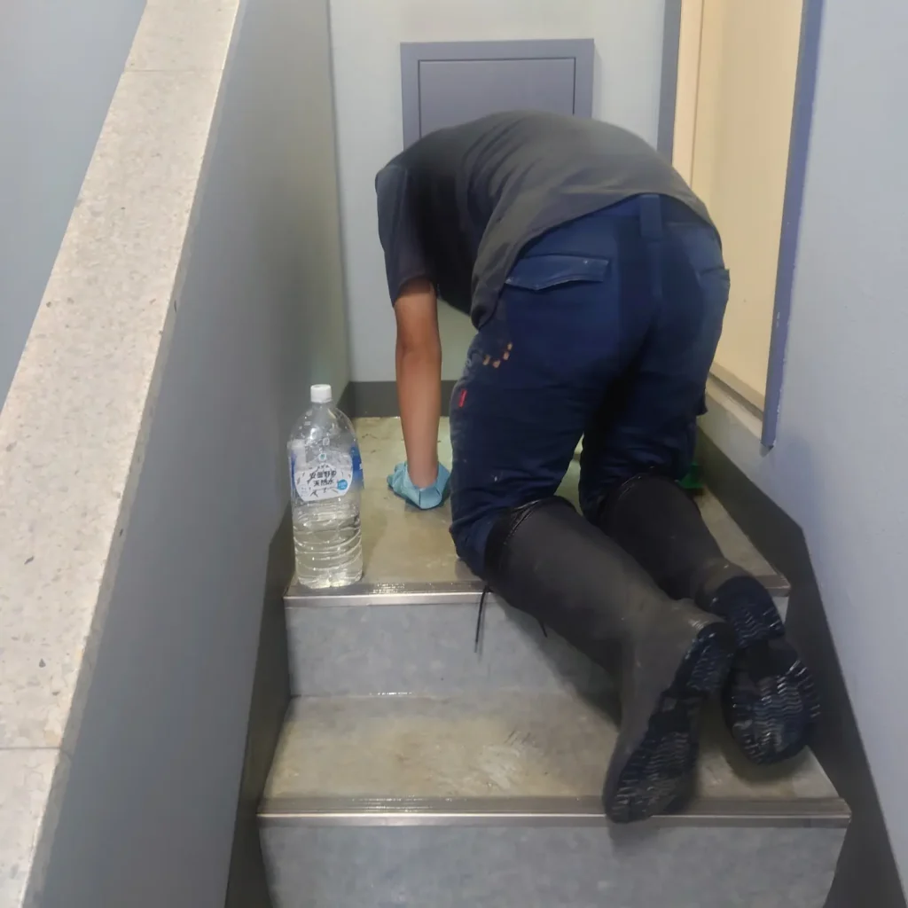
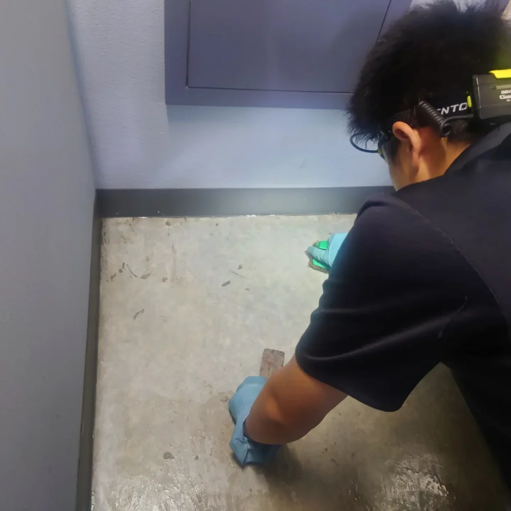
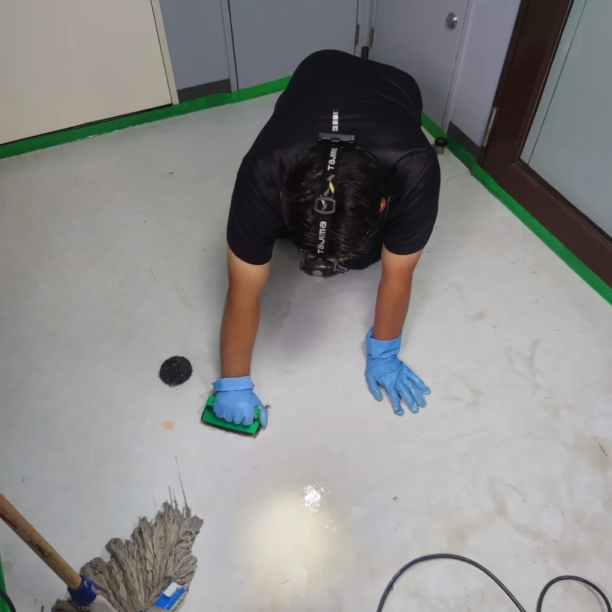
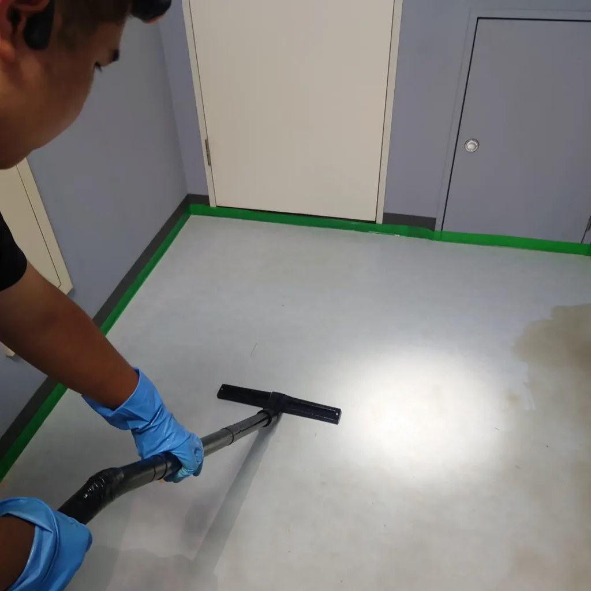
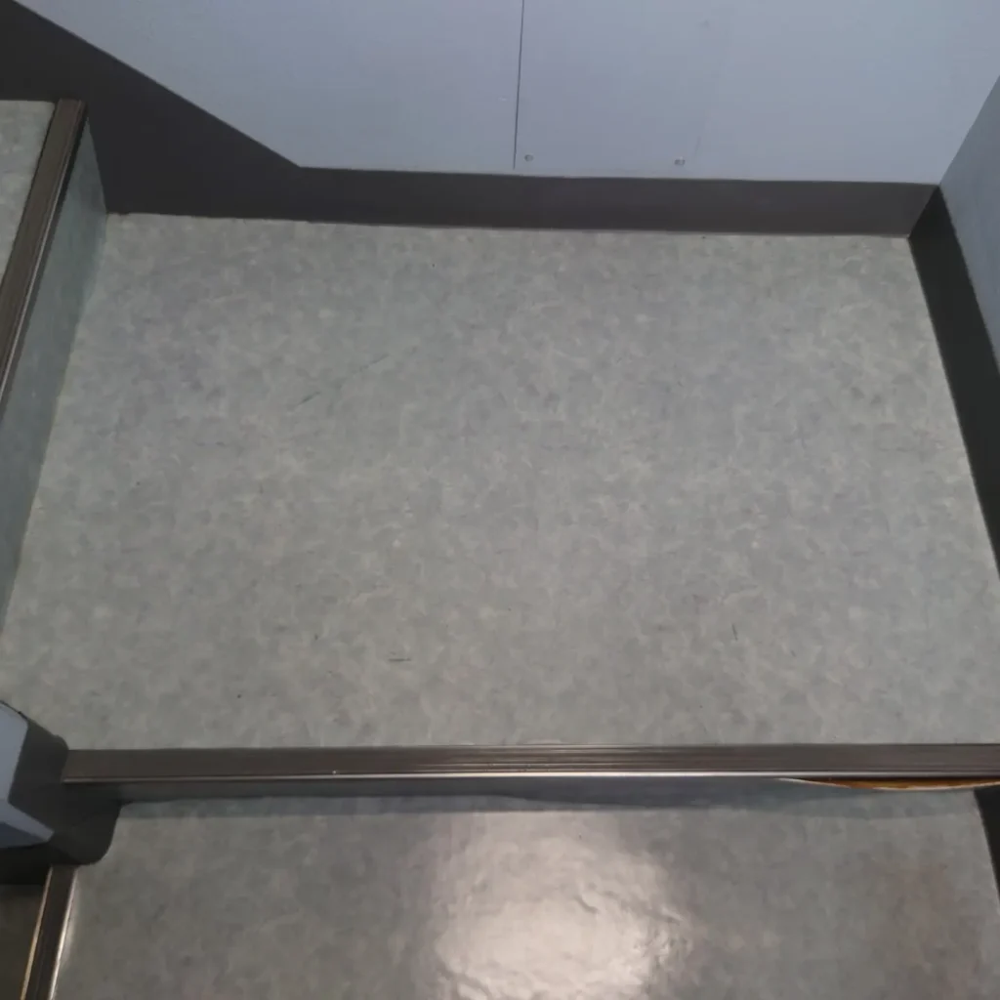

港区広尾 法人のお客様 テナントビルの階段と床 剥離洗浄ワックスクリーニングをしました!
東京都港区広尾の法人のお客様
テナントビルさんの階段と床の剥離洗浄とワックスクリーニングを実施しました!
床、階段は定期清掃なさっていたそうですが、10年ほど剥離清掃は実施していらっしゃらないとのことで、かなり階段と床が黒ずんでおり、綺麗にならないかとのご相談でした。
プロ清掃メソッドで、剥離洗浄後ワックス仕上げ処理を施すと見事に蘇りました！
ビフォー・アフターご覧ください!
綺麗になるヒミツ
「DAIZENクリーニングメソッド」については
DAIZENホームページをご覧ください!
とても綺麗になりました!
♯https://daizen-clean.com/







ビルのメンテナンス清掃、定期清掃で床面をワックス仕上げしますが、ワックス処理で光沢有る綺麗な床面を創出し続けると、数年でどうしても避けられない堆積汚れ、くすみ汚れが目立つ様になります。老朽化したワックスの上から、新たにワックスの重ね塗りをしてしまうと更にくすみ汚れが目立つ事になりますので、この場合老朽化したワックスを一旦全て除去クリーニングして、改めてワックス処理仕上げを実施すると元の輝きに復元します。その老朽化したワックスを除去する作業が剥離清掃作業になります。床面の状況に合った専用剥離溶剤を多様な剥離溶剤シリーズから正しくチョイスします。剥離溶剤は水溶性の物を選び、なるべく薄い濃度から開始して塗布して反応を観察します。剥離溶剤を塗布して5分〜10分で堆積した硬い老朽化したワックスが溶け始めます。剥離作業はおおよそ3クールに分けて溶剤塗布を実施しております。1回目で老朽化ワックスの全体像を溶解着手します、床面の隅や巾木にはしっかり養生を施し隅々迄溶剤を行き渡らせ、床面中央部位は黒系の硬めのパッドを用いて、手作業とポリッシャー作業を併用して老朽化ワックスを剥がしていきます。隅や巾木周辺、老朽化ワックスが硬く堆積している箇所は、ケレン作業で細かく、隙間無く老朽化ワックスを剥がしていきます。1回目作業はそれら剥がしがおおよそ進んだ時点で終了して、ここで剥離した削りカスをバキューム吸引してから床面に水を注ぎます。剥離溶剤は水溶性なので、良く水と反応して更に溶け始めます。2回目作業は同じく手擦りの黒パッドとポリッシャー、ケレン作業にて満遍なく老朽化ワックスを剥がしていきます。ここでまた剥がれた老朽化ワックスカスをバキューム吸引して剥離作業の進捗度合いを確認します。3回目の剥離作業に移ります、新たに剥離溶剤を全面に塗布して1回目作業と同じ工程を繰り返します。ここまで来ると殆どの老朽化ワックスカス剥がれた状態になり、一面綺麗な元の床面が現れます。再度バキューム吸引処理を施して、モップ拭き取り仕上げの後に、床面を一旦乾燥させてから綺麗にワックス処理仕上げを実施していきます。老朽化ワックスでくすんで汚れて見えていたフロアがとても綺麗に甦ります。ぜひ床面剥離清掃クリーニングをご体験下さい、宜しくお願いいたします。